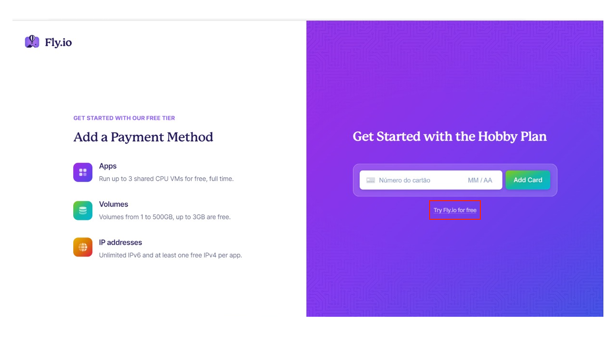

Deploy - Projeto 2 Backend¶
No Projeto 1B fizemos o deploy utilizando o Heroku por oferecer a opção gratuita para projetos pequenos. Porém, a partir do dia 28 de novembro de 2022 a opção gratuita será descontinuada. Para o Projeto 2 você ainda conseguirá utilizar o Heroku, mas caso queira, este handout oferece uma outra alternativa.
Além disso, existem outros serviços que oferecem este tipo de serviço. Desta forma, para o projeto 2 você pode utilizar qualquer alternativa que desejar.
Deploy da Aplicação - Python Django REST¶
Neste handout vamos fazer o deploy da aplicação Django REST utilizando a Fly.io que ofereço uma opção gratuita para pequenos projetos.
Preparando o projeto¶
Lembre de instalar o Gunicorn Green Unicorn para utilizarmos no projeto.
pip install gunicorn
Outras modificações nas configurações¶
Aproveite que está com o settings.py aberto e modifique o valor da constante DEBUG para False. Além disso, procure pela lista ALLOWED_HOSTS. Ela deve ser uma lista vazia. Por questões de segurança, o servidor Django aceita apenas requisições vindas de domínios previamente identificados.
Escolha o nome da sua aplicação. Lembre de utilizar um nome sem espaços, esse nome você informará posteriormente.
Para este exemplo, será utilizado o nome django-rest-2022. Desta forma, o ALLOWED_HOSTS ficará da seguinte forma:
ALLOWED_HOSTS = ['django-rest-2022.fly.dev', 'localhost', '127.0.0.1']
Note que também adicionamos o 'localhost' e o '127.0.0.1'. Eles serão necessários para você testar a aplicação no seu computador.
Postgres¶
Instale o dj-database-url:
pip install dj-database-url
Sempre que você adiciona (ou remove) uma dependência é necessário atualizar o requirements.txt:
pip freeze > requirements.txt
Importante
Note que você deverá executar o comando pip install -r requirements.txt com o ambiente virtual ativado.
Adicione o import no getit/settings.py:
import dj_database_url
Depois substitua o dicionário DATABASES por (assumindo que você utilizou a configuração do Postgres apresentada no handout anterior - caso contrário, adapte a URL):
DATABASES = {
'default': dj_database_url.config(
default='postgresql://localhost/getit?user=getituser&password=getitsenha',
conn_max_age=600,
ssl_require=not DEBUG
)
}
Fazendo o deploy¶
-
Para começar o processo de deploy, crie uma conta no Fly.io.
Ao criar a conta, NÃO é necessário cadastrar o cartão de crédito. Basta clicar em Try Fly.io for free

-
Instale a interface de linha de comando (CLI) do Fly.io: Fly.io CLI.
iwr https://fly.io/install.ps1 -useb | iexbrew install flyctlcurl -L https://fly.io/install.sh | sh -
Faça o login na sua conta do Fly.io pelo terminal com o comando:
fly auth loginCaso não funcione, utilize:
flyctl auth loginEste comando deve abrir o navegador para que você faça o login.
-
Crie um arquivo chamado
Dockerfilecom o conteúdo abaixo. Importante: Modifique o valorgetitemgetit.wsgipelo nome do projeto Django. Caso não saiba o nome do seu projeto, o nome é o mesmo que foi utilizado no comandodjango-admin startproject getit ., por exemplo.ARG PYTHON_VERSION=3.10-slim-buster FROM python:${PYTHON_VERSION} ENV PYTHONDONTWRITEBYTECODE 1 ENV PYTHONUNBUFFERED 1 RUN mkdir -p /app WORKDIR /app COPY requirements.txt /tmp/requirements.txt RUN set -ex && \ pip install --upgrade pip && \ pip install -r /tmp/requirements.txt && \ rm -rf /root/.cache/ COPY . /app/ EXPOSE 8000 CMD ["gunicorn", "--bind", ":8000", "--workers", "2", "getit.wsgi"]O arquivo Dockerfile é utilizado para construir Docker image que são utilizados para construir containers. Note que o arquivo Dockerfile possui instruções que serão executadas para construir um container. Este método é muito utilizado para fazer deploy de aplicações.
Mas não precisa se preocupar caso não entenda os comandos contidos no arquivo acima. Esta etapa será melhor abordada em outras disciplinas.
-
Utilize o comando
fly launch. Será preciso responder algumas perguntas.? Overwrite "../Dockerfile"? No ? Create .dockerignore from 1 .gitignore files? Yes ? App Name (leave blank to use an auto-generated name): NOME_DO_SEU_APP ? Select region: gru (São Paulo) ? Would you like to set up a Postgresql database now? Yes ? Select configuration: Development - Single node, 1x shared CPU, 256MB RAM, 1GB disk -
Agora rode o comando
fly deploy - E para abrir o endereço da aplicação rode:
fly open
Deploy Frontend React¶
Uma opção para o deploy do frontend
Referências¶
- Django Hello, World + Fly.io Deployment: https://learndjango.com/tutorials/django-hello-world-flyio-deployment